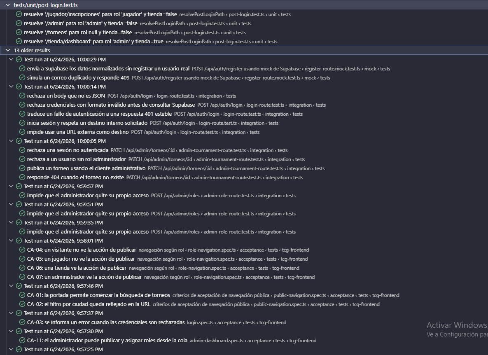
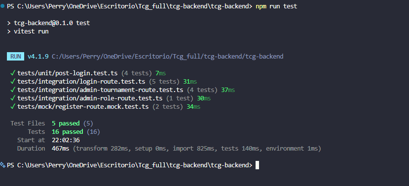
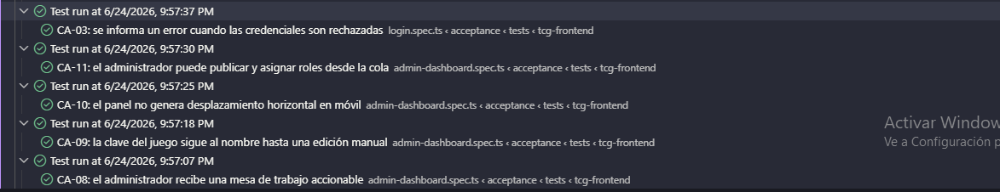
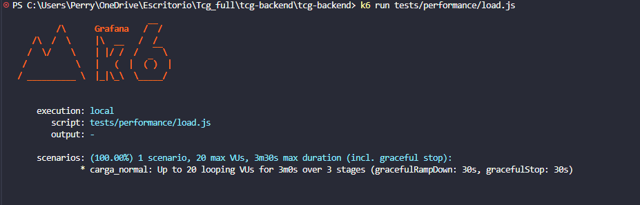
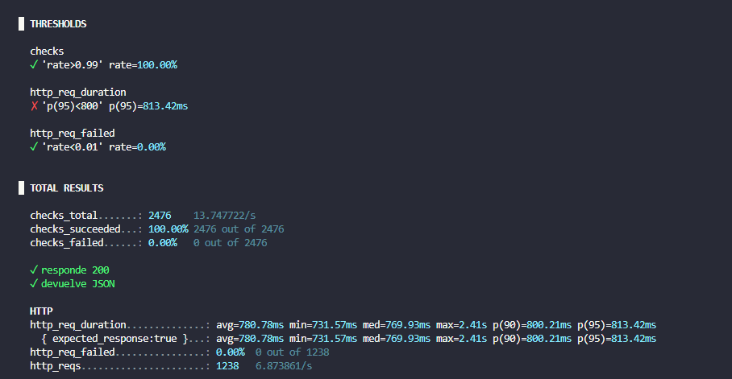
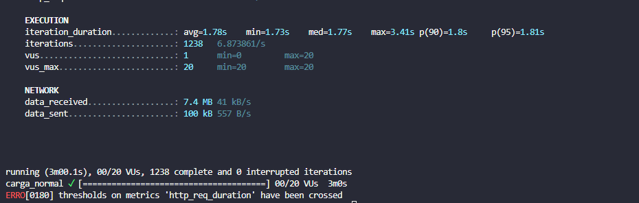
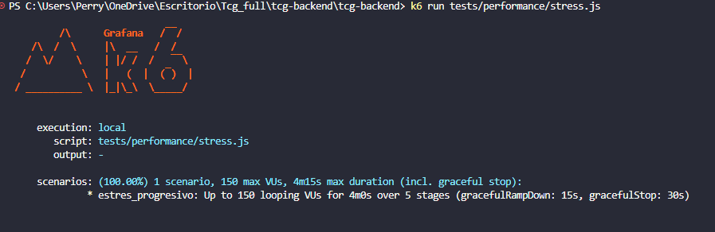
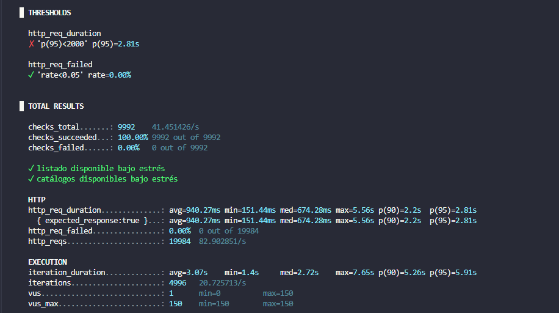
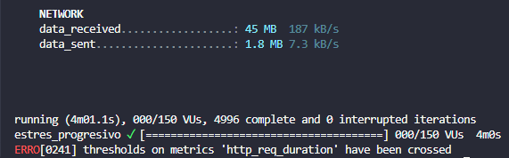

Contratos y seguridad
Vitest cubre rutas de login, publicación administrativa, asignación de roles, resolución post-login y registro usando mocks para no tocar datos reales.
Suite automatizada y documentación técnica
Resumen entregable de alcance, casos, comandos de ejecución, resultados verificados y evidencias para el frontend y backend del sistema de torneos TCG.
Las pruebas validan autenticación, autorización por rol, contratos HTTP, navegación pública, panel de administración, responsive móvil y registro con dobles de Supabase.
Vitest cubre rutas de login, publicación administrativa, asignación de roles, resolución post-login y registro usando mocks para no tocar datos reales.
Playwright levanta un stack simulado local y valida navegación pública, error de login, permisos por rol y operación del panel administrador.
Los scripts k6 fueron ejecutados localmente. Las validaciones funcionales pasaron sin errores HTTP, pero los umbrales de duración p95 quedaron sobre el objetivo en carga y estrés.
Mapa de suites, herramientas, comandos y criterios usados para validar el producto.
| Tipo | Casos | Herramienta | Criterio de aprobación | Comando |
|---|---|---|---|---|
| Unitarias | UT-01 a UT-04 | Vitest | Cada perfil llega a su panel esperado; la tienda tiene prioridad sobre el rol. | npm.cmd run test:unit |
| Integración | IT-01 a IT-10 | Vitest | Contratos 200/400/401/403/404/409 y bloqueo de destinos externos. | npm.cmd run test:integration |
| Mocks | MK-01 a MK-02 | Vitest | Supabase recibe payload normalizado; correo duplicado responde 409 sin crear usuarios reales. | npm.cmd run test:mock |
| Aceptación | CA-01 a CA-11 | Playwright | Los recorridos críticos funcionan por rol y la UI admin no desborda en móvil. | npm.cmd run test:acceptance |
| Carga | PF-01 | k6 | Error menor a 1 %, p95 menor a 800 ms y checks sobre 99 %. | npm.cmd run test:load |
| Estrés | PF-02 | k6 | Error menor a 5 %, p95 menor a 2 s y registro del punto de degradación. | npm.cmd run test:stress |
Detalle funcional de los casos automatizados que quedan cubiertos por las suites actuales.
| ID | Área | Validación | Resultado esperado |
|---|---|---|---|
| UT-01 | Post-login | Rol jugador sin tienda. |
Redirige a /jugador/inscripciones. |
| UT-02 | Post-login | Rol admin sin tienda. |
Redirige a /admin. |
| UT-03 | Post-login | Usuario sin perfil ni tienda. | Redirige a /torneos. |
| UT-04 | Post-login | Usuario admin con tienda asociada. | Prioriza /tienda/dashboard. |
| IT-01 | Login API | Body no JSON. | Responde 400 y no consulta Supabase. |
| IT-02 | Login API | Email inválido o contraseña vacía. | Responde 400 antes de autenticar. |
| IT-03 | Login API | Credenciales rechazadas por Supabase. | Responde 401 con código estable password-login-failed. |
| IT-04 | Login API | Login válido con nextPath interno. |
Responde 200 y respeta el destino solicitado. |
| IT-05 | Login API | Login válido con URL externa como destino. | Bloquea el destino y redirige a /torneos. |
| IT-06 | Admin torneos | Publicación con sesión no autenticada. | Responde 401 y no usa cliente administrativo. |
| IT-07 | Admin torneos | Publicación con usuario no administrador. | Responde 403. |
| IT-08 | Admin torneos | Administrador publica un torneo. | Responde 200 y actualiza publicado: true. |
| IT-09 | Admin torneos | Administrador intenta publicar torneo inexistente. | Responde 404. |
| IT-10 | Admin roles | Administrador intenta quitarse su propio rol admin. | Responde 409 y bloquea la operación. |
| MK-01 | Registro | Alta exitosa con Supabase simulado. | Responde 201 y envía metadata normalizada. |
| MK-02 | Registro | Correo duplicado simulado. | Responde 409 con mensaje de correo en uso. |
| CA-01 | Navegación pública | La portada permite comenzar la búsqueda. | Llega a /torneos y ve el título "Torneos TCG". |
| CA-02 | Navegación pública | Filtro por ciudad. | La URL conserva ciudad=Santiago. |
| CA-03 | Login UI | Credenciales rechazadas. | La persona permanece en login y ve un error accesible. |
| CA-04 | Roles UI | Visitante en navegación. | No ve "Publicar evento"; sí ve "Crear cuenta". |
| CA-05 | Roles UI | Jugador autenticado. | No ve "Publicar evento"; sí ve "Mis inscripciones". |
| CA-06 | Roles UI | Tienda autenticada. | Ve la acción "Publicar evento". |
| CA-07 | Roles UI | Administrador autenticado. | Ve "Publicar evento" y "Administración". |
| CA-08 | Admin UI | Panel administrador. | Presenta mesa de trabajo y acciones publicables. |
| CA-09 | Admin UI | Clave interna de juego. | La clave sigue al nombre hasta edición manual. |
| CA-10 | Admin UI | Vista móvil de 390 px. | No genera desplazamiento horizontal. |
| CA-11 | Admin UI | Publicación de borrador y asignación de roles. | Muestra confirmaciones "Torneo publicado." y "Rol actualizado.". |
Resultados funcionales verificados el 25 de junio de 2026 en Windows. Las evidencias k6 adjuntas corresponden a ejecuciones locales capturadas el 24 de junio de 2026.
tsc --noEmit sin errores en backend y frontend.
http_req_failed=0.00% y p95=813.42ms; excede el umbral objetivo de 800 ms.
http_req_failed=0.00% y p95=2.81s; excede el umbral objetivo de 2 s.
En PowerShell, npm.cmd evita el bloqueo de ejecución de npm.ps1.
cd tcg-backend/tcg-backend
npm.cmd run lint
npm.cmd run typecheck
npm.cmd testcd tcg-frontend/tcg-frontend
npm.cmd run lint
npm.cmd run typecheck
npm.cmd run test:acceptancecd tcg-backend/tcg-backend
k6 run -e BASE_URL=https://ambiente-autorizado.example tests/performance/load.js
k6 run -e BASE_URL=https://ambiente-autorizado.example tests/performance/stress.jsCapturas, documentos, specs y reportes que sostienen esta página.




tests/performance/load.js con escenario de hasta 20 VUs.


http_req_duration fue cruzado en la prueba de carga.

tests/performance/stress.js con escenario progresivo hasta 150 VUs.


http_req_duration fue cruzado durante la prueba.
{kind=link}
{kind=link}
{kind=link}